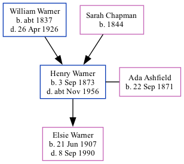

Henry John Warner 1873 - c1956
[ Home ] | [ Calendar ] | [ Surnames Index ] | [ Family History ]A domestic under gardener and the son of William Warner (a builder's laborer) and Sarah ChapmanHenry Warner, the first cousin three-times-removed on the father's side of Nigel Horne, was born in St Peters, Thanet, Kent, England on Sep 3, 18731,2,3,4, was baptized there on Oct 5, 1873 and married Ada Ashfield (with whom he had 1 child, Elsie Ada, ) in Abingdon, Berkshire, England on Apr 23, 19055.
Throughout his life, Henry lived in several places: at Burtons Cottages, St Peters, Thanet, Kent, England on Apr 3, 18816; at Magdala Road, St Peters in Thanet on Apr 5, 18917; at Rumfields, St Peters in Thanet on Mar 31, 19011; at Gardeners Lodge, Hillside, Fitzroy Park, Highgate, London, England on Apr 2, 19119 and on Jun 19, 19218; and at 58 Valley Road, Beckenham, Kent on Sep 29, 19392.
He died c. Nov 1956 in Eton, Buckinghamshire, England3.
Parents
- William Robert was born c. 1837
- Sarah was born in 1844
Children
- Elsie Ada was born on Jun 21, 1907
Citations
- 1901 England, Wales & Scotland Census - Findmypast (was age 27 and the son of the head of the household)
- 1939 Register - Findmypast (was recorded at this address)
- England & Wales deaths 1837-2007 - Findmypast
- Kent, Canterbury Archdeaconry baptisms 1538-1912 - Findmypast
- England & Wales marriages 1837-2008 - Findmypast
- 1881 England, Wales & Scotland Census - Findmypast (was age 7 and the son of the head of the household)
- 1891 England, Wales & Scotland Census - Findmypast (was age 17 and the son of the head of the household)
- 1921 Census Of England & Wales - Findmypast (was age 49 and the head of the household)
- 1911 Census for England & Wales - Findmypast (was age 37 and the head of the household)
Media
Kent, Canterbury Archdeaconry baptisms 1538-1912 - GBPRS/CANT/B/96351688
England & Wales births 1837-2006 - BMD/B/1873/3/AZ/000550/352
England & Wales marriages 1837-2008 - BMD/M/1903/4/AZ/000407/160
1939 Register - TNA/R39/1214/1214H/009/08
1881 England, Wales & Scotland Census - GBC/1881/0004870504
1891 England, Wales & Scotland Census - GBC/1891/0005914442
England & Wales Deaths 1837-2007 - BMD-D-1956-4-AZ-001118-127
1921 Census of England & Wales - GBC/1921/RG15/00806/0481/01
Family Tree
Generated by ged2site. Last updated on Nov 13, 2024